Vertex Context Menu
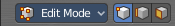
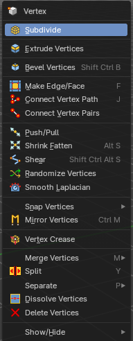
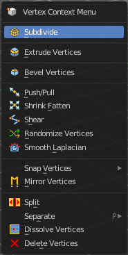
Call this menu with double right click in the 3D viewport. You need to be in Edit mode with a Mesh object. And in selection mode Vertice to see all its content.
Select geometry to reveal all content.
Subdivide
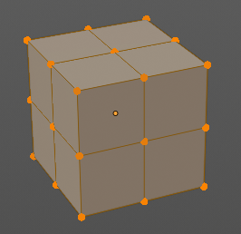
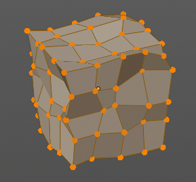
Subdivide divides the selected edges. It subdivides the involved faces too, and can create new vertices.
A more unknown functionality is that it can also randomize the result with the Fractal slider in the Last operator panel.
Last Operator Subdivide
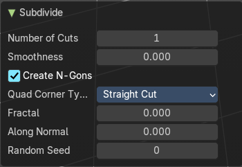
Number of Cuts
The number of cuts defines the amount of subdivisions.
Smoothness
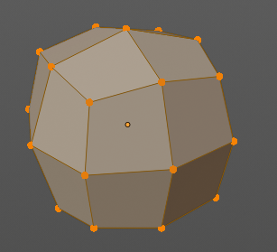
This value defines how smooth the subdivision result is. From flat to bent.
Create N-Gons
Create N-Gons if required. Else subdividing N-Gons creates Tris.
Quad Corner Type
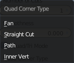
Adjust the corner type.
| Entry | What it does |
|---|---|
| Fractal | Randomize the selected vertices. |
| Along Normal | When randomized, this value defines how strong the subdivision follows the normals of the initial vertices. |
| Random Seed | Randomizing value for fractal randomizing. |
Extrude Vertices
Extrudes out the selected vertices by moving the mouse.
Last Operator Extrude Only Vertices and Move
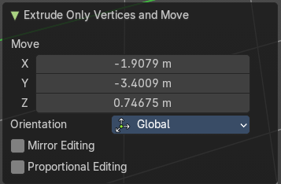
Move X Y Z
The coordinates for the extruded geometry.
Orientation
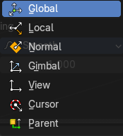
Choose the type of orientation, in which coordinate system the action should happen.
Mirror Editing
Enable mirror editing.
Proportional editing
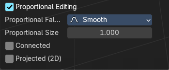
Enables proportional editing. Activating proportional editing reveals further settings.
| Entry | What it does |
|---|---|
| Proportional Falloff | Adjust the falloff methods. |
| Proportional Size | See and adjust the falloff radius. |
| Connected | The proportional falloff gets calculated for connected parts only. |
| Projected(2D) | The proportional falloff gets calculated in the screen space. Depth doesn't play a role. When it's in the radius, then it gets calculated. |
Bevel Vertices
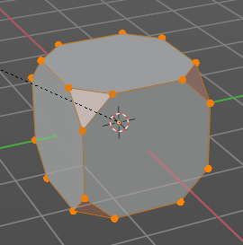
Adds a bevel at the selected vertices.
Last Operator Bevel
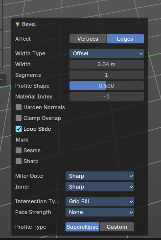
Affect
Affect vertices or edges.
Width Type
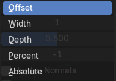
The width type.
| Entry | What it does |
|---|---|
| Width | The bevel amount. |
| Segments | How many segments gets created. |
| Profile Shape | Controls the Profile shape. 0.5 means round. |
| Material Index | Assigns a material slot to the new bevel faces. -1 is the surrounding material. |
Harden Normals
When enabled, the per-vertex face normals of the bevel faces are adjusted to match the surrounding faces, and the normals of the surrounding faces are not affected. This will keep the surrounding faces flat (if they were before), with the bevel faces shading smoothly into them. For this effect to work, custom split normals need to be enabled, which requires Auto Smooth to be enabled (see Normals). As a convenience, that option will be enabled for you if it is not already when you enable Harden Normals here.
| Entry | What it does |
|---|---|
| Clamp Overlap | Do not allow beveled geometry to overlap each other. Prevents bevel geometry from intersecting itself. Helps avoid messy geometry in tight corners. |
| Loop Slide | Slides new edges along adjacent geometry for better topology flow |
| Mark | Seams: Mark the edges of the new created geometry as seams. · Sharp: Mark the edges of the new created geometry sharp. |
Miter Type
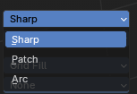
Miter Outer
How the outer miter is set. Miter is how the bevel rounding at a corner is done.
Sharp
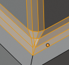
Creates a sharp miter.
Patch
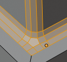
This replaces the outside vertex of a miter with 3 vertices. And uses a patch pattern there.
Arc
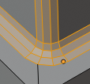
This replaces the vertex of a miter with 2 vertices, joined by an arc. A separate Spread parameter says how far to move the vertices away from their original position.
Inner Miter
How the inner miter is set. Miter is how the bevel rounding at a corner is done.
Sharp
Creates a sharp miter.
Arc
This replaces the vertex of a miter with 2 vertices, joined by an arc. A separate Spread parameter says how far to move the vertices away from their original position.
Spread
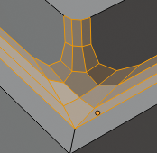
Belongs to inner miter method Arc. Adjust how strong the inner radius is bent.
Intersection type
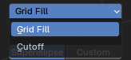
The method to use to create meshes at intersections. Bevel can create self intersecting geometry.
| Entry | What it does |
|---|---|
| Grid Fill | Fills intersections with a grid-like topology. |
| Cutoff | Trims or removes overlapping geometry at intersections |
Face Strength
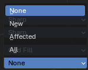
Set Face Strength on the faces involved in the bevel, according to the specified mode. This can be used in conjunction with a Weight Normals Modifier (with the Face Influence option checked).
| Entry | What it does |
|---|---|
| None | Do not set face strength. |
| New | Set the face strength of new faces along edges to Medium, and the face strength of new faces at vertices to Weak. |
| Affected | In addition to those set for the New case, also set the faces adjacent to new faces to have strength Strong. |
| All | In addition to those set for the Affected option, also set all the rest of the faces of the model to have strength Strong. |
Profile Type
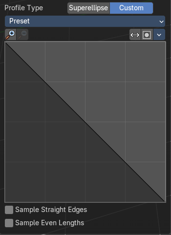
The profile type.
Superellipse
Uses a mathematically smooth curve for bevel profiles
Custom
Allows manual control of the bevel profile shape via a curve widget.
Presets
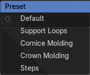
Curve presets.
Navigation elements
| Entry | What it does |
|---|---|
| Zoom in and out | The two buttons with the magnifying glass at it zooms in and out in the curve window. |
| Reverse Path | Reverses the curve path. |
| Toggle Profile Clipping | Turns the profile clipping on or off. |
Tools menu
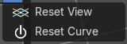
| Entry | What it does |
|---|---|
| Reset View | Resets the curve windows zoom. |
| Reset Curve | Resets the curve to the initial shape. |
Curve view
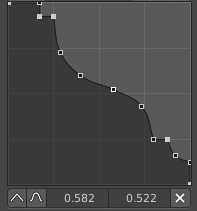
Adjust the profile curve.
Left click where no point is adds a new point. Left click at a point allows you to move it.
Holding down Shift while moving a node point activates precision movement.
Holding down ctrl while moving activates temporary snapping.
When a point is selected then the curve view reveals a sub menu at the bottom.
Handler and node position
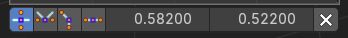
When you select a node, then the handler and node position tools shows below the curve window.
| Entry | What it does |
|---|---|
| Handle Type Auto Handle | Sets the handle type of this curve point to smooth. |
| Handle Type Vector Handle | Sets the handle type of this curve point to sharp. |
| Handle Type Free Handle | Sets the handle type of this curve to Free handles. The curve point has now two handles with which you can adjust the curve before and after the point each. |
| Handle Type Aligned Free Handle | Sets the handle type of this curve to Free handles. The curve point has now a handle with which you can adjust the curve. |
| X Y Values | The position of the currently selected curve point |
| Entry | What it does |
|---|---|
| Sample straigt edges | Sample edges with vector handles. |
| Sample even length | Sample edges with even lengths. |
Make Edge/Face
Adds a face when you have edges selected. And Edges when you have Vertices selected. It's a Bridge tool.
You can have either the one method or the other. When you select two adjacent vertices, then you select the edge too. And the tool works in edge mode then. In this case just the possible faces gets created. Not edges between single vertices.
First select the edges or Vertices that you want to bridge. Then click the New Edge/Face from Vertices Button.
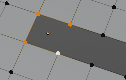
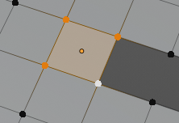
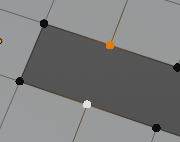
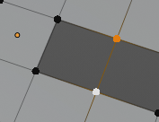
Connect Vertex Path
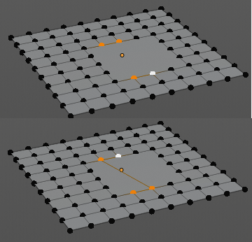
Connect Vertex path connects selected vertices, but takes the vertex order into account in which you selected the vertices. It just creates edges between vertices that are not connected in this order.
Connect Vertex Pair
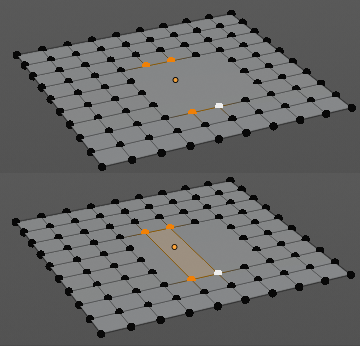
Connect Vertex pair connects selected vertices and makes a face of the pairs.
Push/Pull
It pushes or pulls the object positions relative to the center of the selection.
In Object mode this tool requires to have more than one object selected.
Last Operator Push/Pull
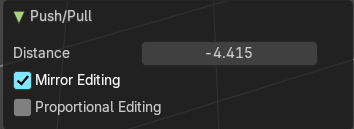
| Entry | What it does |
|---|---|
| Distance | Adjust the strength of influence of the tool. |
| Mirror Editing | Enable mirror editing. |
Proportional editing
Enables proportional editing. Activating proportional editing reveals further settings.
| Entry | What it does |
|---|---|
| Proportional Falloff | Adjust the falloff methods. |
| Proportional Size | See and adjust the falloff radius. |
| Connected | The proportional falloff gets calculated for connected parts only. |
| Projected(2D) | The proportional falloff gets calculated in the screen space. Depth doesn't play a role. When it's in the radius, then it gets calculated. |
Shrink/Fatten
Shrink/Fatten scales the selected geometry along its normals. Transform orientation and Pivot point gets ignored.
A positive value pushes the vertices outwards. A negative value pushes the vertices inwards.
Last Operator Shrink/Fatten
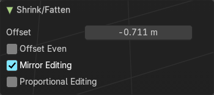
The Last Operator Shrink/Fatten panel gives you tools to adjust the Shrink/Fatten operation. Here you have numeric input for the strength and a few more options.
| Entry | What it does |
|---|---|
| Offset | Offset is the strength of the offset for Shrink/Fatten. |
| Offset Even | Offset Even scales the selection to give more thickness in even areas. |
| Mirror Editing | Enable mirror editing. |
Proportional editing
Enables proportional editing. Activating proportional editing reveals further settings.
| Entry | What it does |
|---|---|
| Proportional Falloff | Adjust the falloff methods. |
| Proportional Size | See and adjust the falloff radius. |
| Connected | The proportional falloff gets calculated for connected parts only. |
| Projected(2D) | The proportional falloff gets calculated in the screen space. Depth doesn't play a role. When it's in the radius, then it gets calculated. |
Shear
Shear shears the selection.
Last Operator Shear
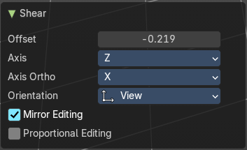
The shear tool works along a imaginary 2d plane. The shear axis controls if the items are sheared along the x or the y axes of this plane. This is the plane along which the transformation happens. You can shear along the x or the y axis of this plane.
To make things even more complicated, the orientation of this imaginary plane is defined by the Axis and Axis Ortho items below.
| Entry | What it does |
|---|---|
| Offset | Adjust an offset. |
| Axis | Defines one axis of the imaginary shear axis plane. |
Axis Ortho
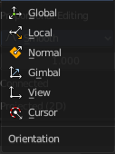
Defines the other axis of the imaginary shear axis plane.
| Entry | What it does |
|---|---|
| Orientation | Choose the orientation for the shear action. |
| Mirror Editing | Enable mirror editing. |
| Proportional editing | Enables proportional editing. Activating proportional editing reveals further settings. · Proportional Falloff: Adjust the falloff methods. · Proportional Size: See and adjust the falloff radius. · Connected: The proportional falloff gets calculated for connected parts only. · Projected(2D): The proportional falloff gets calculated in the screen space. Depth doesn't play a role. When it's in the radius, then it gets calculated. |
Randomize Vertices
This tool allows randomizes the positions of the selected vertices.
Last Operator Randomize
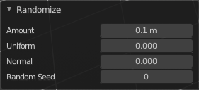
| Entry | What it does |
|---|---|
| Amount | Adjust the amount. |
| Uniform | The uniform offset distance. |
| Normal | Align the offset direction to the normals. |
| Random Seed | The seed value for randomization. |
Smooth Laplacian
Laplacian Smooth Vertex smooths out the angles between the selected vertices. It is a tool to reduce noise at the mesh. It works a bit different than the normal Smooth Vertex tool. And gives a different result. The Laplacian method allows you to preserve the volume, and to adjust border smoothing.
Last Operator Laplacian Smooth Vertices
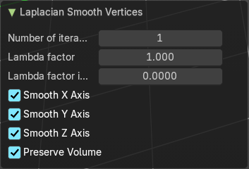
| Entry | What it does |
|---|---|
| Number of Iterations | Number of Iterations is the number of iterations that the smoothing action gets repeated. With 1 the smoothing is just performed once. With 10 it is performed ten times. |
| Lambda Factor | Lambda Factor is the strength of the smoothing. |
| Lambda Factor in border | Lambda Factor is the strength of the smoothing in border areas. |
| Smooth Axis | The Smooth Axis check boxes allows you to limit the smoothing to specific world axis. |
| Preserve Volume | Preserve Volume preserves the volume of the object. |
Snap Vertices
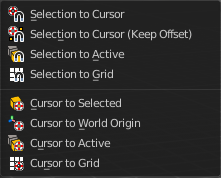
Choose several methods to snap one element to another. The menu items should be self explaining.
Last Operator Snap
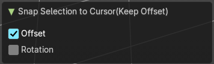
Some snap operations shows a last operation panel, some not.
| Entry | What it does |
|---|---|
| Offset | If the selection should snap as a whole, or if each individual element of the selection should snap. |
| Rotation | Rotate to match the cursor. |
Mirror Vertices
Mirror by hotkeys. You activate the tool, type in x for x global for example, or x x for x local. And the selection gets mirrored.
Last Operator Mirror
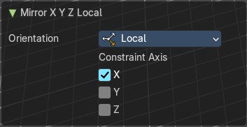
The Last Operator Mirror panel gives you tools to adjust the mirror action.
Orientation
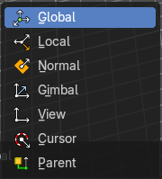
Orientation is a drop-down box choose the type of orientation for the mirroring action.
Constraint Axis
Constraint Axis gives you again the possibility to define the mirror axis. You can choose more than one axis here.
Vertex Crease
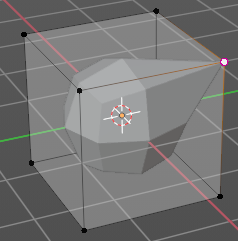
When you use a Subdivision Surface Modifier, then you can define the sharpness of selected vertices with this tool. Crease vertices will be marked colored in edit mode.
You will see a value in the header that indicates the current strength when you activate the tool. Move with the mouse to increase or decrease the value. Or type in a value while you are in this mode. You can also scale into negative range.
A negative crease value will subtract from the current active crease value in case it exists already from a former crease operation. A Crease value of -1 removes the crease from this edge.
Last Operator Vertex Crease
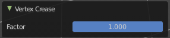
Factor
Adjust the crease factor.
Merge Vertices
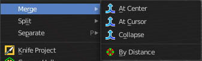
Merges the geometry.
At Center, At Cursor, Collapse
Merges the geometry with the given methods.
Last Operator Merge
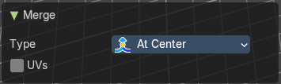
| Entry | What it does |
|---|---|
| Type | Choose the merge method again. |
| UV's | Move the UV's according to the merge. |
By Distance
Merge the vertices by their distance to each other. This tool is meant to remove double vertices at the same location.
Last Operator Merge by Distance
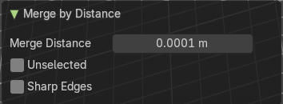
| Entry | What it does |
|---|---|
| Merge Distance | Adjust the distance below which the vertices gets merged. Merge selected vertices to unselected vertices. |
| Unselected | Merge also unselected vertices |
| Sharp Edges | Calculate sharp edges if possible. |
Split
Splits the edges between the selected vertices. It creates two edges out of one. And splits the edge by that.
Separate
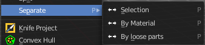
Separate separates the selected geometry, and creates a new object. The geometry becomes uneditable, since it is now a new object. You will have to leave the Edit mode, select the new object, and re-enter Edit mode when you want to edit it.
| Entry | What it does |
|---|---|
| Selection | Selection separates the current selection. |
| By Material | By Material separates all geometry that has the same material than the current selection. |
| By Loose Parts | By Loose parts separates all geometry that is connected by edges to the current selection. |
Dissolve Vertices
Dissolve Vertices dissolves the selected Vertices.
Note that pressing Del in Vertice select mode calls Dissolve Vertices already. It's the same operator. But you don't get the Last operator that way.
Last Operator Dissolve Vertices
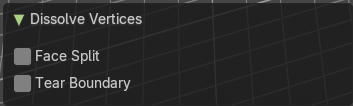
| Entry | What it does |
|---|---|
| Face Split | Split off Face corners to maintain surrounding geometry |
| Tear Boundary | Split off Face corners instead of merging faces. |
Delete Vertices
Deletes the selected vertices.
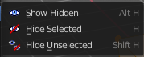
The Show/Hide menu is available for all object types and in all modes. It is usually in the object related menu to find. In Object mode it's the Object menu, for a curve object in edit mode it is the Curve menu. It always contains three menu items. Show Hidden, Hide Selected and Hide Unselected.
| Entry | What it does |
|---|---|
| Show Hidden | Makes all hidden elements in the scene visible again. |
| Hide Selected | Hides the selected elements. |
Hide Unselected
Hides the not selected elements. The selected elements stays visible.
Last Operator Reveal Hidden / Hide Selected
Select
Define if the selected or the unselected elements gets hidden or revealed.